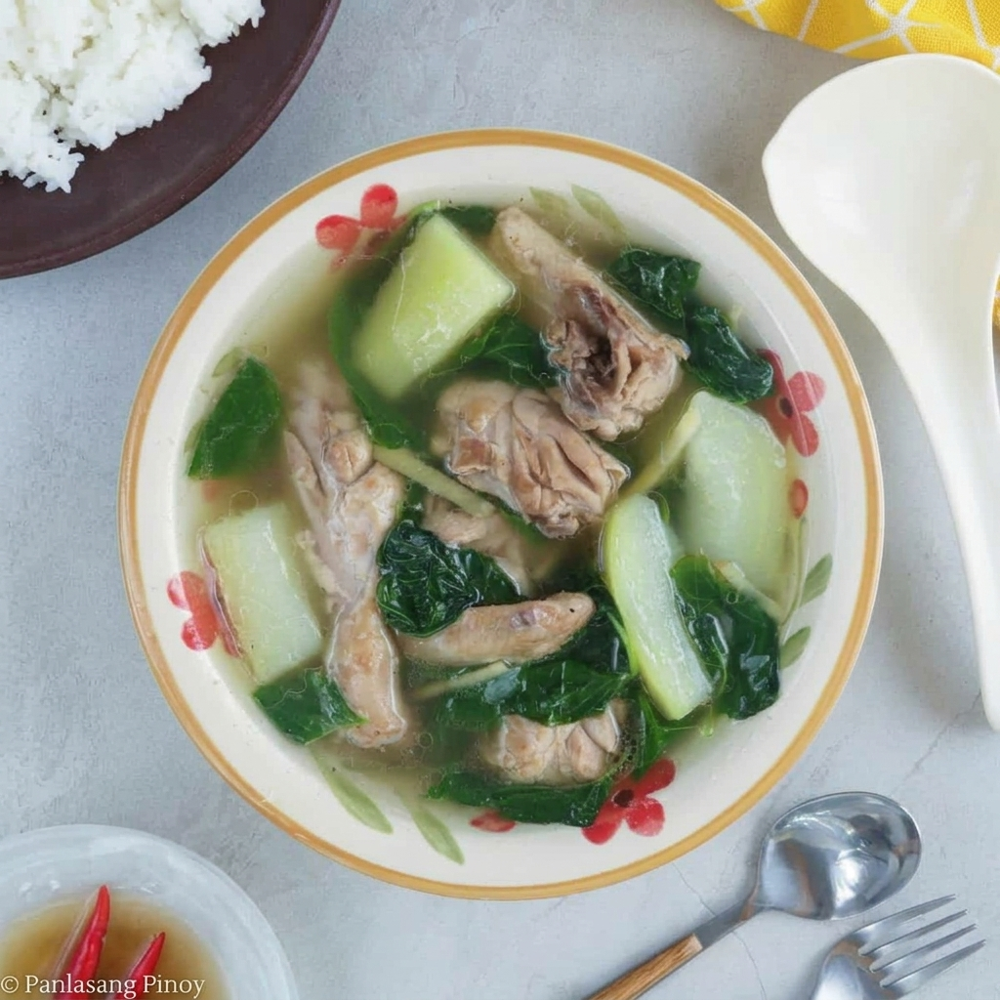

About Chicken Tinola
Chicken Tinola is a comforting Filipino soup made with chicken, ginger, and vegetables. It is known for its light but flavorful broth. Green papaya, malunggay, and hot pepper leaves are added to make the dish more delicious. It is commonly served hot with white rice.
Recipe Information
- Preparation Time: 5 minutes
- Cooking Time: 1 hour
- Total Time: 1 hour and 5 minutes
- Servings: 5 people
- Cuisine: Filipino
Ingredients
- 2 lbs chicken, cut into serving pieces
- 1 cup malunggay leaves
- 1 cup hot pepper leaves
- 1/8 teaspoon ground black pepper
- 1 unripe green papaya, cut into wedges
- 6 cups water
- 1 Knorr chicken cube
- 1 onion, sliced
- 4 cloves garlic, crushed and chopped
- 3 thumb-sized pieces ginger, sliced into strips
- 2 tablespoons fish sauce
- 3 tablespoons vegetable oil
Cooking Instructions
- Prepare all the ingredients. Cut the chicken into serving-sized pieces, slice the onion and ginger, and chop the garlic.
- Wash and prepare the green papaya. Remove the skin and seeds, then cut it into wedges. Wash the malunggay and hot pepper leaves.
- Heat 3 tablespoons of vegetable oil in a large cooking pot over medium heat.
- Add the garlic, onion, and ginger. Saute until fragrant and the onion starts to soften.
- Add the ground black pepper. Stir to combine it with the sauteed ingredients.
- Place the chicken pieces in the pot. Cook for about 5 minutes, turning occasionally until the outer parts become lightly browned.
- Pour 6 cups of water into the pot. Bring the soup to a boil, then cover and reduce the heat to low.
- Allow the chicken to simmer for approximately 40 minutes until it becomes tender and fully cooked.
- Use a spoon to remove the foam and excess oil that may collect on top of the broth.
- Add the chicken cube and sliced green papaya. Stir gently, cover the pot, and continue cooking for another 5 minutes.
- Add the malunggay leaves and hot pepper leaves. Pour in the fish sauce to season the soup.
- Let everything cook for about 2 more minutes. Taste the broth and adjust if needed.
- Transfer the Chicken Tinola into a serving bowl and serve hot with steamed rice.
Cooking Tips
- Sauteing the ginger helps release its aroma and flavor into the soup.
- Simmer the chicken over low heat to help keep the meat tender.
- You may substitute sayote for green papaya if preferred.
- Add the leafy vegetables near the end to avoid overcooking.
Chicken Tinola Video Tutorial
Watch the Chicken Tinola cooking tutorial from Panlasang Pinoy.
Recipe adapted from Panlasang Pinoy - Classic Tinolang Manok .